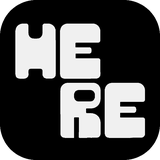
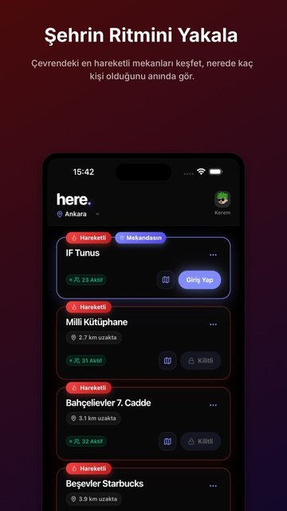
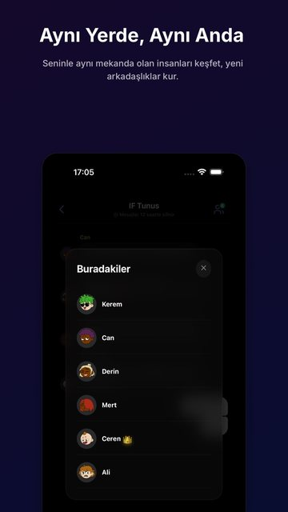
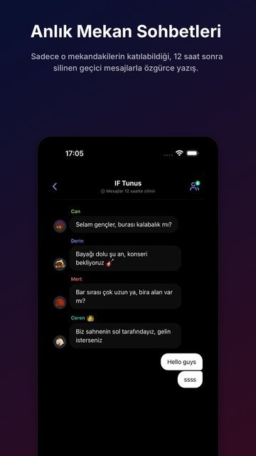
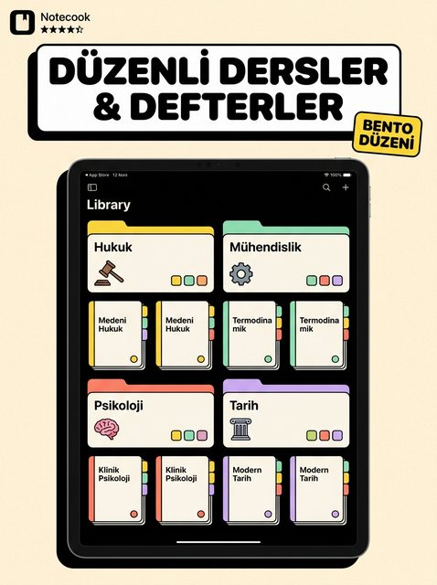
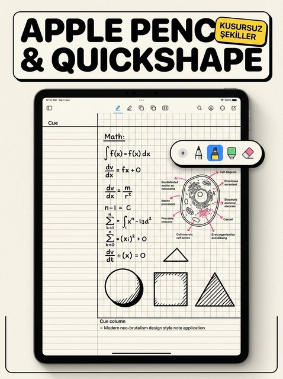
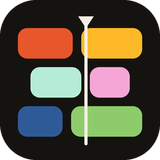
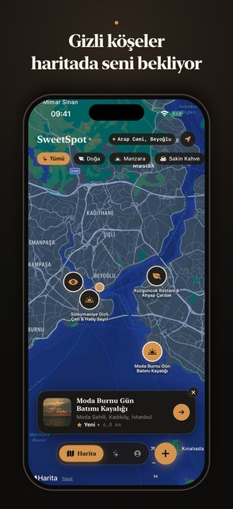
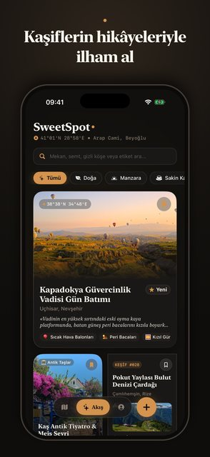

here.
On the App StoreSee who's at the same venue right now and meet them.
It draws polygon boundaries around malls and campuses, and it was tested in real venues in Konya.
React · Capacitor · Firebase
Get it on the App Store ↗




notecook
On the App StoreA handwriting notebook for iPad and Apple Pencil.
Your handwriting becomes searchable, you can write on top of PDFs, and your notebooks sync over iCloud.
SwiftUI · PencilKit · Vision · SwiftData + CloudKit
Get it on the App Store ↗
plainday
In App Store reviewA day planner that understands plain Turkish and English sentences.
Write one sentence and it becomes a task. Widgets, alarms and Siri.
SwiftUI · SwiftData · AlarmKit · WidgetKit · App Intents
Cuma fizyoloji ödevi 18:00Fizyoloji ödevi · Fri · 18:00
yarın annemi ara 18:00Annemi ara · Tomorrow · 18:00
hafta içi her gün sporSpor · Mon–Fri
her sabah 7de alarm vitaminVitamin · Daily · 07:00 · alarm
friday math homework 6pmMath homework · Fri · 18:00
buy milkBuy milk · anytime


SweetSpot
Saklı Yerler
In App Store reviewA map of quiet, little-known places.
Every place is photographed on the spot, and new posts are moderated before they go live.
SwiftUI · MapKit · Firebase · Cloud Functions
Fiziyoo
In developmentA clinic app for physiotherapists.
It analyses posture from a photo and shows every measurement alongside its error band.
SwiftUI · SwiftData + CloudKit · Vision · Swift Charts
PlainParse
Open source · MITA Swift package that turns one plain sentence into a task.
It runs plainday's quick-add bar. No dependencies, no network, 150 tests.
Code on GitHub ↗let entry = parser.parse("Cuma fizyoloji ödevi 18:00") entry.title // "Fizyoloji ödevi" entry.day // next Friday entry.minute // 1080, i.e. 18:00
How I work
I treat AI as a team I direct, not a magic box. Claude shows up as co-author on my commits, on purpose. I keep my own library of rules and skills, so every project starts from what the last one taught me.